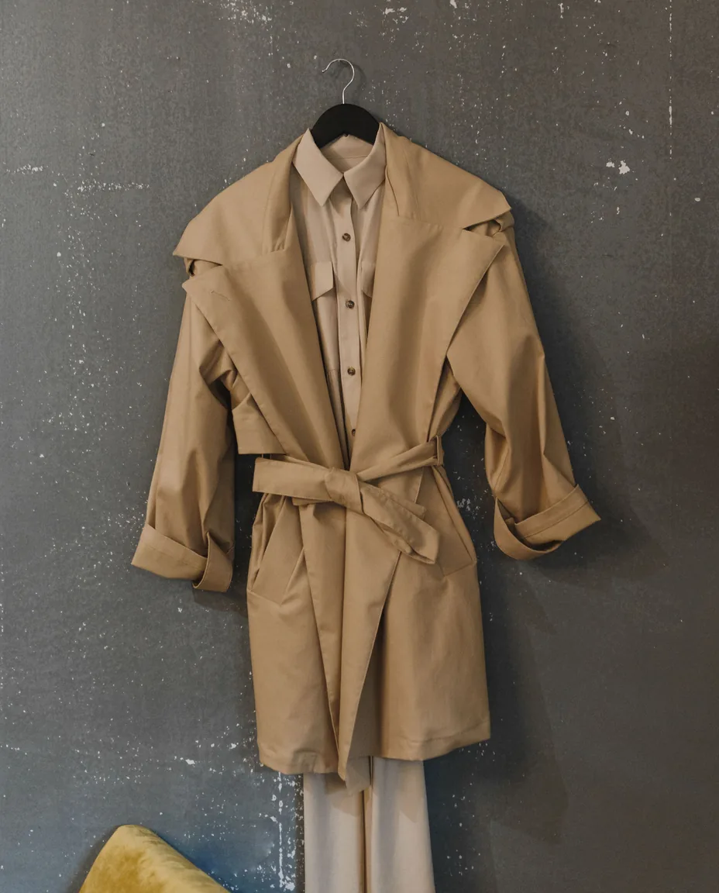

The Sunday Knit
Oatmeal knitwear

01 / 03A study in proportion · No. 014
$480 USD
A relaxed, midweight cotton trench in warm sand, with clean lapels, an easy belt, and room for a quiet second layer.
Model is 178 cm / 5'10" and wears size S.
Cart interactions are a local demonstration only; no orders or payments are processed.
Cotton-blend trench · Relaxed longline fit with a self-tie belt, button front, and practical side pockets. Follow the care label. Product specifications in this demo are sample copy for customization.
Complimentary delivery on orders over $250. This demo template does not process or fulfill orders. See the live store's delivery information before purchase.
XS: EU 34 · S: EU 36 · M: EU 38 · L: EU 40 · XL: EU 42. For a closer fit, consider sizing down.
The next thing, perhaps